library(ggplot2)
library(dplyr)
swe <- readRDS("data/swe.rds")5 Data visualisation
Last week was about what belongs on a plot. This week is about how to put it there.
R can plot without any extra packages — hist() and plot() in session 2 were doing exactly that. Those are fine for a quick look at something for your own benefit. For anything another person will see, use ggplot2, which is what this chapter is about.
5.1 The grammar
Every ggplot is built the same way, and once you see the pattern the rest is vocabulary.
ggplot()says which data frame you are using.aes()maps variables onto parts of the plot — which variable goes on which axis, which one decides colour.- A
geom_function says what to draw: points, bars, lines, boxes. - Everything after that adjusts labels, scales and appearance.
The layers are joined with +. Note that this is + and not the pipe |>; ggplot2 was written before the pipe existed and has kept its own way of stacking layers.
ggplot(swe, aes(x = lr_self)) +
geom_bar()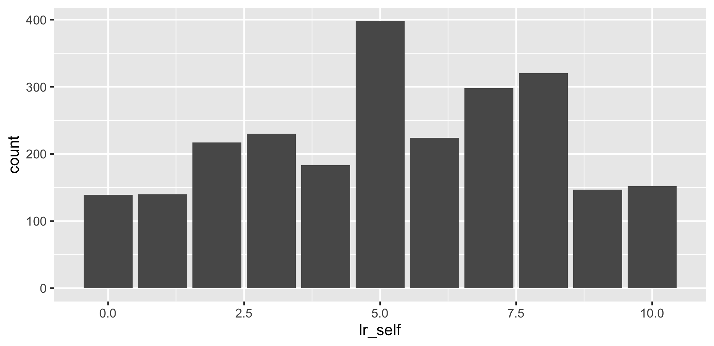
That is a complete plot: a data frame, one mapping, one geom.
5.2 One variable at a time
5.2.1 Categorical: a bar chart
For a categorical variable, geom_bar() counts the cases in each category and draws one bar per category.
ggplot(swe, aes(x = vote)) +
geom_bar()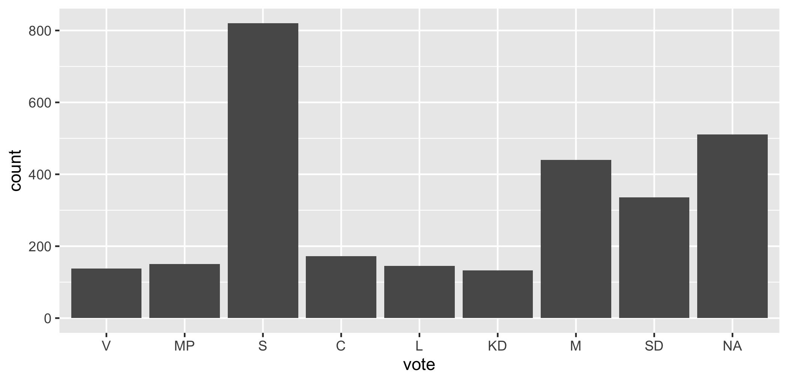
The parties come out in left-to-right order because that is the order of the factor levels, which we set when the data was built. Had they been left as plain text they would be in alphabetical order, which would mean nothing.
The bar for NA is everyone who did not vote or did not say. It is worth leaving visible rather than quietly dropping it.
5.2.2 Continuous: a histogram
For a continuous variable, geom_histogram() cuts the range into intervals and counts how many fall in each.
ggplot(swe, aes(x = age)) +
geom_histogram(binwidth = 5)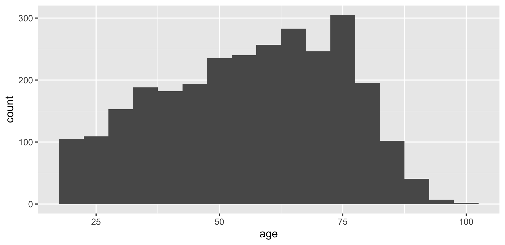
binwidth sets how wide each interval is, in the units of the variable — here five years. The alternative argument bins sets the number of intervals instead. If you give neither, ggplot picks 30 and warns you, because the choice changes the picture and should be yours.
The gap between bars in a bar chart and the absence of one in a histogram is not decoration. Separate bars say the categories are distinct; touching bars say the scale is continuous and the intervals are cuts through it.
5.2.3 A density plot
geom_density() draws the same thing as a histogram with a smooth line instead of bars.
ggplot(swe, aes(x = age)) +
geom_density(fill = "grey70")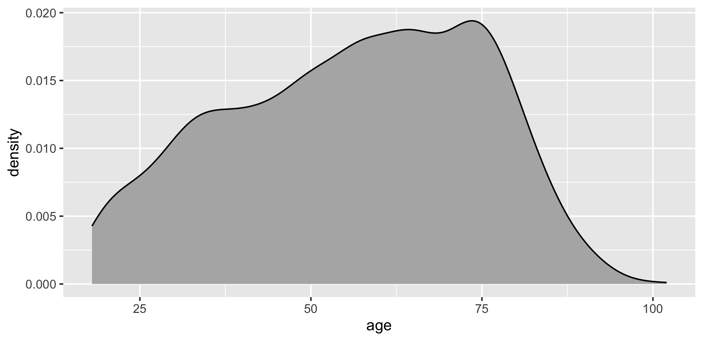
Ignore the numbers on the vertical axis. “Density” is scaled so that the area under the curve is 1, which makes it comparable between groups but meaningless on its own.
5.3 Two variables
5.3.1 Two categorical: bars side by side
swe |>
filter(!is.na(vote), !is.na(educ3)) |>
ggplot(aes(x = vote, fill = educ3)) +
geom_bar(position = "dodge")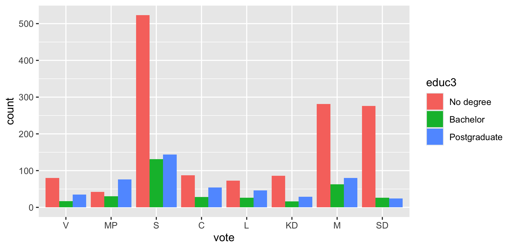
Two new things. fill inside aes() maps education onto the colour of the bars. position = "dodge" puts the bars for the three education groups side by side; the default, "stack", would pile them on top of each other.
Note that the pipe works up to the point where ggplot starts. swe |> filter(...) |> ggplot(...) is fine; after that it is +.
A question. Stacked and dodged bars show the same numbers. Stacking makes the total for each party easy to read and the comparison between education groups hard; dodging does the opposite.
Which one you want depends on the question. What question is each of them the right answer to?
5.3.2 Categorical and continuous: a boxplot
swe |>
filter(!is.na(vote)) |>
ggplot(aes(x = vote, y = lr_self)) +
geom_boxplot()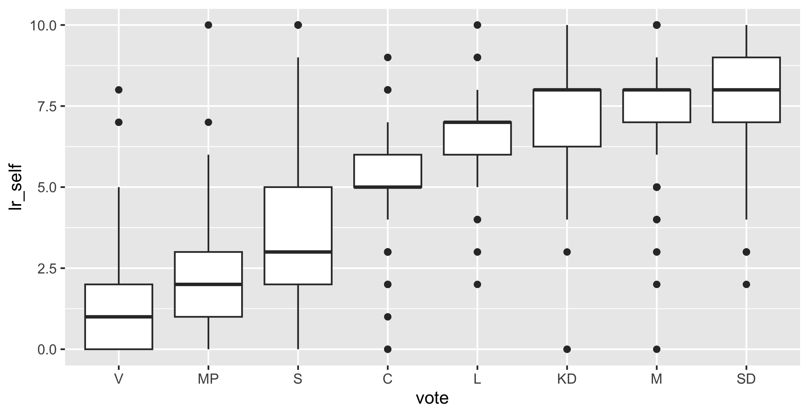
geom_boxplot() summarises a distribution with five numbers. The thick line is the median. The box covers the middle half of the cases, from the 25th to the 75th percentile. The whiskers reach out to the most extreme case within 1.5 box-widths of the box, and anything beyond that is drawn as an individual point.
This one plot contains a large part of Swedish politics: the median Left Party voter places themselves near the left end, the median Sweden Democrat voter well to the right, and the boxes overlap far more than party competition suggests.
5.3.3 Two continuous: a scatterplot
ggplot(swe, aes(x = like_s, y = like_m)) +
geom_point()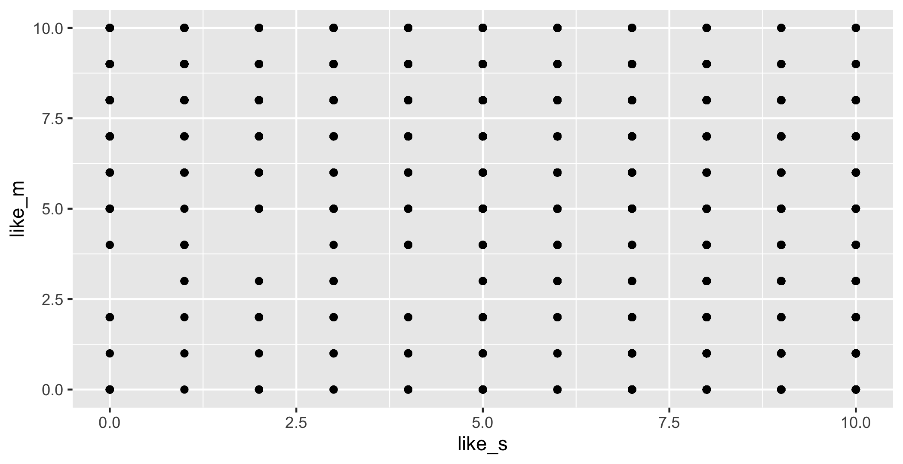
That plot is nearly useless, and the reason is worth understanding. Both variables take eleven whole-number values, so 2,845 respondents are stacked on 121 positions. Every dot looks the same whether one person or four hundred are underneath it.
Two ways out, both from last week:
ggplot(swe, aes(x = like_s, y = like_m)) +
geom_count(alpha = 0.7)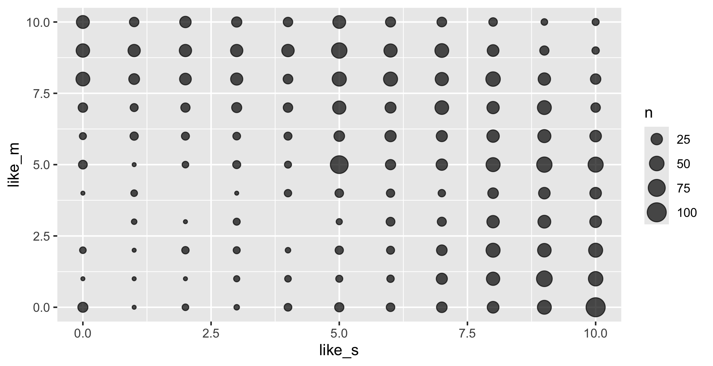
geom_count() sizes each dot by how many cases sit there. For genuinely continuous variables the usual alternative is alpha, which makes points transparent so that overlaps show up darker.
5.3.4 Over time: a line
geom_line() joins the points in order. A line implies that the thing between two points is real, which makes it right for time and wrong for categories — joining the tops of eight party bars with a line would suggest the space between the Greens and the Social Democrats means something.
Our survey is a single moment, so this example uses economics, a data set of US economic time series that comes with ggplot2.
ggplot(economics, aes(x = date, y = psavert)) +
geom_line()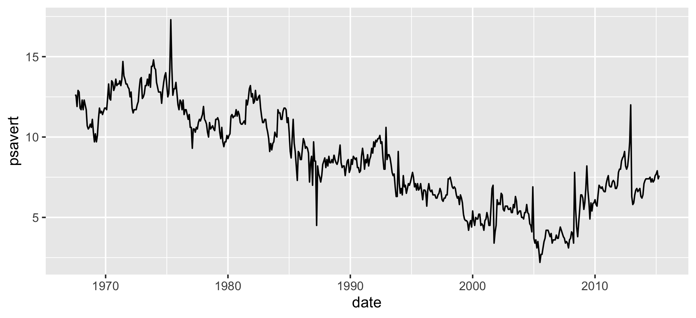
5.4 Mapping and setting
This distinction catches everybody once, so it is worth meeting deliberately.
Mapping means “let this variable decide”. It goes inside aes().
swe |>
filter(!is.na(bloc)) |>
ggplot(aes(x = lr_self, fill = bloc)) +
geom_density(alpha = 0.5)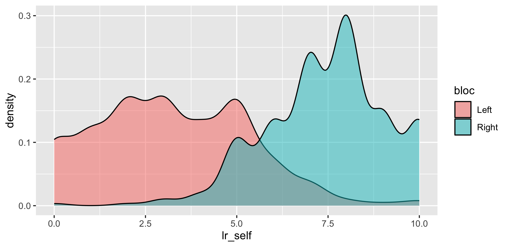
Setting means “make it this, always”. It goes outside aes(), as an argument to the geom.
ggplot(swe, aes(x = lr_self)) +
geom_density(fill = "steelblue", alpha = 0.5)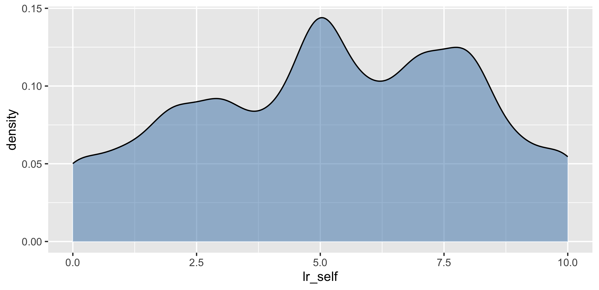
Put a fixed value inside aes() and ggplot treats it as a variable with one category — you get a legend saying “steelblue” and a colour that is not the one you asked for. Put a variable outside aes() and you get an error.
5.5 Faceting
Rather than crowding groups onto one plot, draw one small plot per group.
swe |>
filter(!is.na(vote)) |>
ggplot(aes(x = lr_self)) +
geom_histogram(binwidth = 1) +
facet_wrap(~vote)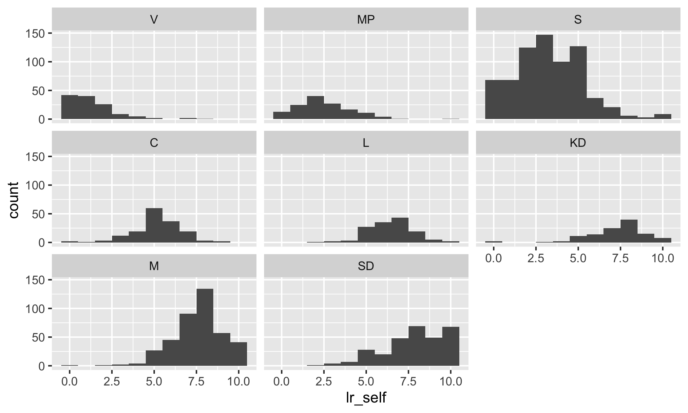
facet_wrap() takes a variable after a ~ and makes one panel per value. The ~ marks a formula, which is R’s way of writing “in terms of”; it turns up again in every model from session 11 onwards.
All panels share the same axes, which is the point — it makes the panels comparable. facet_grid(rows ~ cols) splits by two variables at once.
5.6 Making it readable
Everything so far has been about getting the data onto the page. The rest is about the reader.
5.6.1 Labels
The single most common failure in student work: axes labelled with variable names.
swe |>
filter(!is.na(vote)) |>
ggplot(aes(x = vote, y = lr_self)) +
geom_boxplot() +
labs(
x = "Party voted for in 2022",
y = "Left-right self-placement (0 = left, 10 = right)",
title = "Voters place themselves where their party is"
)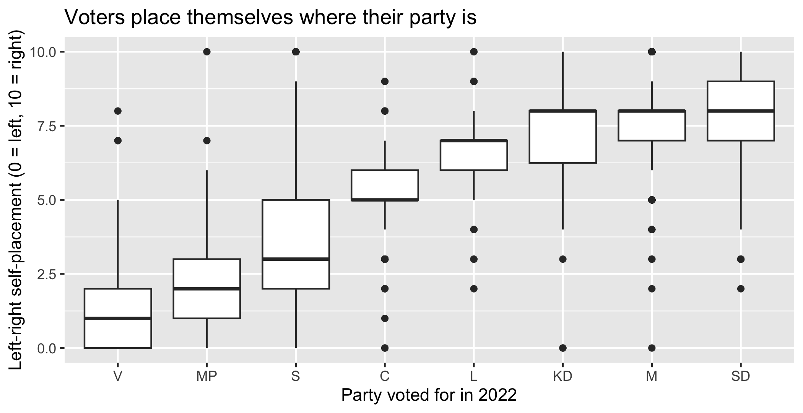
labs() sets the axis titles, the plot title, and the legend titles — the argument for a legend is named after the aesthetic it belongs to, so colour = "..." or fill = "...".
lr_self is a name for you. “Left-right self-placement (0 = left, 10 = right)” is a name for the reader, and it carries the direction of the scale, which the reader otherwise has to guess.
5.6.2 Themes
A theme is a bundle of appearance settings. theme_bw() and theme_minimal() both drop the grey background, which prints better and puts less between the reader and the data.
ggplot(swe, aes(x = age, y = lr_self)) +
geom_point(alpha = 0.15) +
labs(
x = "Age (years)",
y = "Left-right self-placement"
) +
theme_bw()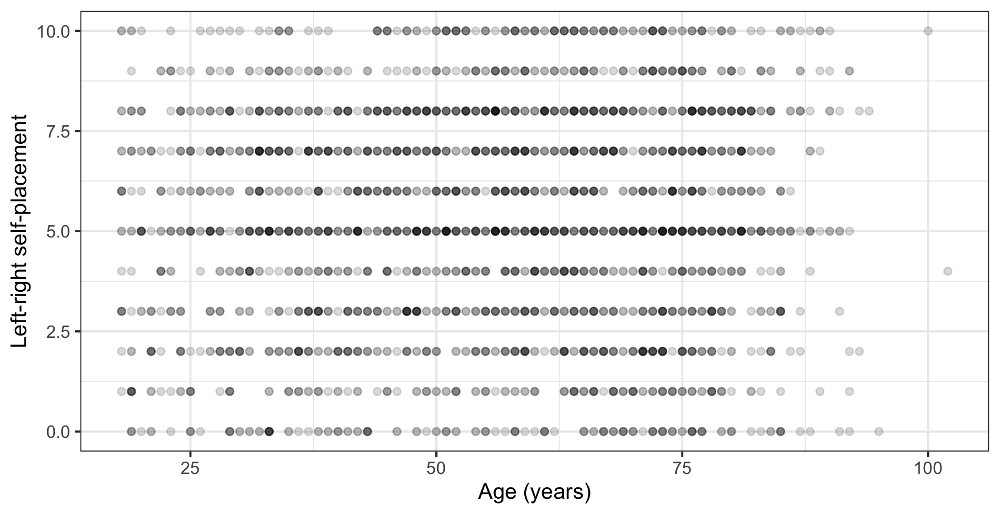
theme() on its own changes individual elements. The one you will need most is text size, which every theme takes as base_size:
theme_bw(base_size = 11)The rule is that text on the figure should be about the size of the text around it. A figure shrunk to half a page carries its labels down with it, and a plot whose axis labels are half the size of the body text tells the reader it is not important.
5.6.3 Colour that survives contact with a reader
Three rules, and they cost nothing to follow.
One. Do not encode the same thing twice. If the parties are already on the horizontal axis, colouring them by party as well adds no information and uses up the only free channel you had.
swe |>
filter(!is.na(vote)) |>
ggplot(aes(x = vote, fill = vote)) +
geom_bar() +
labs(x = "Party", y = "Respondents")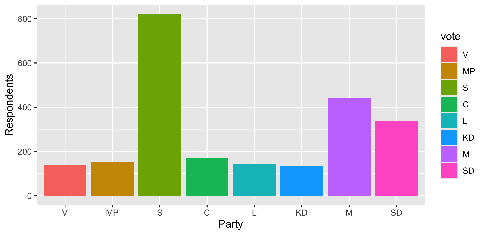
Eight colours, a legend, and not one thing on that plot that the plain grey version did not already say.
Two. If you want to draw attention to one case, highlight it and leave the rest grey. That is what a reader’s eye is for.
swe |>
filter(!is.na(vote)) |>
mutate(highlight = vote == "SD") |>
ggplot(aes(x = vote, fill = highlight)) +
geom_bar() +
scale_fill_manual(values = c("grey70", "grey20")) +
labs(x = "Party", y = "Respondents") +
theme(legend.position = "none")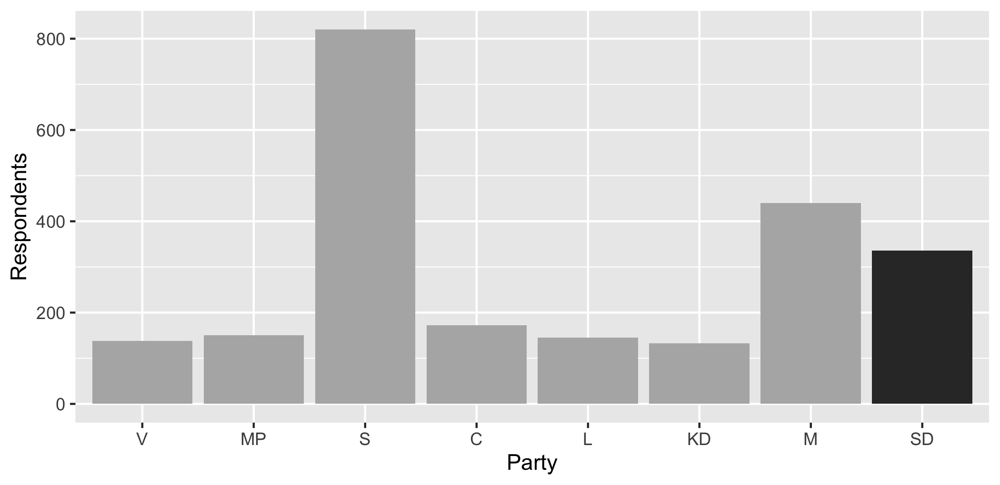
scale_fill_manual() sets the fill colours by hand. theme(legend.position = "none") removes the legend, which here would explain a distinction the reader can already see.
Three. Check that your colours work for a colourblind reader. Around one man in twelve has some form of red-green colour deficiency, so a red-versus-green comparison is invisible to a noticeable share of any audience. Do not judge this by eye — use a palette built for it.
swe |>
filter(!is.na(bloc)) |>
ggplot(aes(x = lr_self, fill = bloc)) +
geom_density(alpha = 0.6) +
scale_fill_viridis_d(end = 0.8) +
labs(
x = "Left-right self-placement",
y = "Density",
fill = "Bloc"
) +
theme_bw()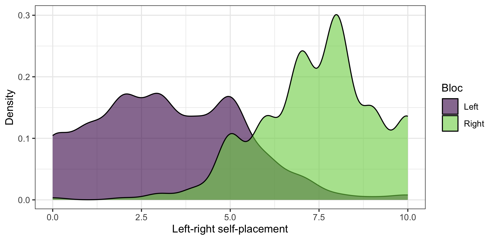
scale_fill_viridis_d() uses the viridis palette, which is designed to stay distinguishable under every common form of colour deficiency and also when printed in black and white. The d is for discrete; scale_fill_viridis_c() is the version for a continuous variable.
Never use a rainbow for a quantity. A rainbow has no order — nobody agrees whether green is more than orange — so it invents boundaries that are not in the data. For a quantity use a single hue from light to dark. For something with a natural middle, like a balance of opinion, use two contrasting hues with grey in the middle.
5.6.4 And one thing never to do
Never put two different vertical scales on one plot. It looks efficient and it is not: the alignment between the two scales is arbitrary, so you can make the two series appear to move together or apart simply by choosing different limits. Any correlation the reader sees is one you drew.
If you have two quantities of different sizes, use two plots side by side, or express both as an index starting from the same value.
5.7 Putting last week’s rules into code
Chapter 4 ended with eight rules for showing what you know. Here they are as ggplot.
| Rule | How |
|---|---|
| Show the whole of a bounded scale | coord_cartesian(xlim = , ylim = ) |
| Equal intervals | the default; do not use a log axis without saying so |
| Human-language axis labels with units | labs(x = , y = ) |
| Mark the anchor points | annotate("point", x = , y = ) |
| Shade the forbidden region | annotate("polygon", x = , y = , fill = ) |
| Draw the equality line | geom_abline(intercept = 0, slope = 1) |
| One piece of information per element | do not map a variable that is already on an axis |
| Nothing that carries no information | theme(legend.position = "none") when the legend is redundant |
And the whole thing on one plot:
world <- readr::read_csv("data/world.csv", show_col_types = FALSE)
ggplot(world, aes(x = lit_m, y = lit_f)) +
annotate(
"point",
x = c(0, 100),
y = c(0, 100),
size = 2.5
) +
geom_point(alpha = 0.5) +
geom_abline(
intercept = 0,
slope = 1,
linetype = "dashed"
) +
coord_cartesian(xlim = c(0, 100), ylim = c(0, 100)) +
labs(
x = "Male literacy rate (%)",
y = "Female literacy rate (%)",
title = paste(
"Women are less often literate than men,",
"and the gap widens as literacy falls"
)
) +
theme_bw()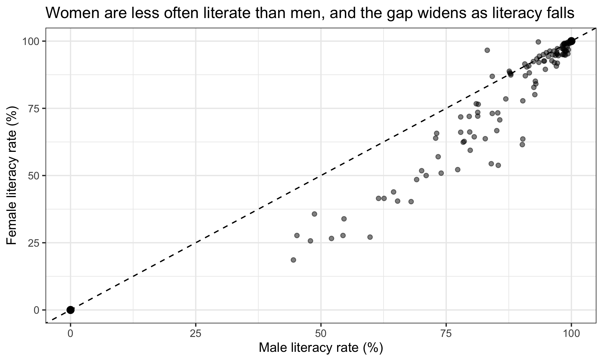
5.8 Before it leaves your computer
A short checklist. Every item is something a marker will notice.
- Are both axes labelled in words a reader outside the course would understand, with units?
- Does the scale direction appear somewhere, if the variable has one?
- Is the text on the figure about the size of the text around it?
- Does every element carry information? Delete anything that does not.
- Is anything encoded twice?
- If a bounded scale is involved, is the whole of it shown?
- Would the plot survive being printed in black and white?
- Does the caption say what the reader is looking at, rather than repeating the title?
5.9 Saving
Put the plot in an object, then write it out with ggsave().
literacy_plot <- ggplot(world, aes(x = lit_m, y = lit_f)) +
geom_point(alpha = 0.5) +
labs(
x = "Male literacy rate (%)",
y = "Female literacy rate (%)"
) +
theme_bw()
ggsave(
"figures/literacy.pdf",
plot = literacy_plot,
width = 6,
height = 4
)width and height are in inches, and they matter more than they look: they set the size the text is drawn at relative to the plot. A figure saved at 12 by 8 and then shrunk to fit a page has labels half the size they should be. Save it at the size you will use it.
The file type comes from the extension. Use .pdf for anything going into a written document — it stays sharp at any size. Use .png for slides or the web, and set dpi = 300 or better.
In the seminar. swirl lesson 5, Data Visualisation. The grammar, one-variable and two-variable plots, mapping against setting, faceting, and labelling a figure properly. Around 30 minutes.